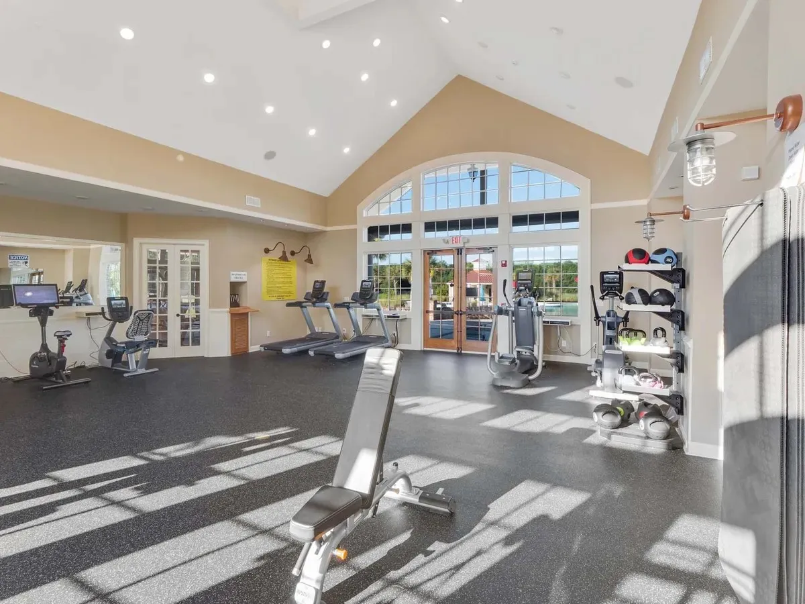

Photo pair 1


geometrically_supported
Shared-image context: No cross-listing duplicate found by the current three-hash test
Hash / geometric comparison evidence
{
"hash_hamming": {
"phash": 2,
"center_phash": 0
},
"hash_min": 0,
"priority_policy": "obvious_v1_both_phashes_le_6_nonshared",
"exact_hash_hamming": {
"phash": 2,
"center_phash": 0
},
"orb_ransac": {
"score": 0.8220012135922329,
"detail": {
"inliers": 823,
"ratio_matches": 824,
"coverage": 0.408301904352734,
"homography": [
[
0.9988695827888313,
-0.0009709763587417191,
0.41873384903432637
],
[
-0.00017025384356759432,
0.9985489492554767,
0.25445334645448836
],
[
-5.923788382600561e-07,
-1.657395483680907e-06,
1.0
]
]
},
"comparison_ms": 12.809071005904116,
"feature_lookup_or_extraction_ms": 149.7452850016998
}
}